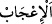

Bunlar dışındakiler kirli ve pis
9- Sâlih ameller ile sâlih olmayan amellerin de, bu iki mefhumla alakası vardır. Sırf
Allah rızası için yapılan ameller sâlih amellerdir. Riya ve gösteriş için yapılanlar ise
sâlih olmayan amellerdir.
İhlasla yapılan ibadet güzeldir
Yoksa beyinsiz posttan ne elde edilir?
et-Te’vilâtü’n-Necmiyye’de şöyle denilmektedir: Pis, seni Allah’tan alıkoyan her
şeydir. Temiz ise seni Allah’a ulaştıran her şeydir. Yine “Tayyib” tek olan Allah
Teâlâ’dır. “Pis” ise mâsivâ dır ki onda kesret (çokluk) vardır.
“Pis ve kötünün çokluğu tuhafına gitse yahut hoşuna gitse, de (bu böyledir)” Yani
pis ve kötünün çokluğu hoşuna gitmese de gitse de hangi hal düşünülürse düşünülsün
temiz ile bir olmaz. Şüphesiz murdarın çokluğu senin hoşuna gitmiş olsa bile temize
denk olması imkansızdır. Çünkü azlığa ve çokluğa değil, iyilik ve kötülüğe itibar edilir.
Nitekim övgüye layık az iş, çok olan kötü işten daha hayırlıdır. Hatta kötü çoğaldıkça
kötülüğü daha da artar, daha murdar bir şey olur.
“
”kelimesinin mânâsı, hayret edilecek bir şey sebebiyle sevinmek demektir.
Âyetteki hitap, Hz. Peygamber (s.a.)’in hitab etmekle emrolunduğu herkesedir.
“Öyleyse ey akıl sahipleri!” Yani ey akl-ı selim sahipleri! Hakikatte, kalpleri ve
ruhları beden ve nefis kabuklarından sıyrılıp kurtulmuş olanlar. “Murdar çok bile olsa,
onun arasından az ve temizi araştırıp tercih etmek konusunda “Allah’tan korkun ki
kurtuluşa eresiniz.” Ahiret saadetinden ibaret olan felaha; yani hakiki kurtuluşa
kavuşmayı ümit edebilesiniz.”
Takvâ ise derece derecedir:
İbn Atâ demiştir ki: “Takvâ, zahirde Allah’ın koyduğu sınırları muhâfaza, batında ise
niyet ve ihlası korumaktır.” Aynı zât “Allah’tan hakkıyla sakının.” (Âl-i İmran, 3/102)
âyeti hakkında şöyle demiştir: Allah’tan hakkıyla korkup takvâ sahibi olmak: “Sâdıkâne
bir şekilde “La ilahe illallah” demek ve gönülde Allah’tan başka hiç bir şeye yer
vermemektir.”
Hazret-i Mevlânâ’nın, vefâtına yakın yapmış olduğu tavsiyelerinin bir kısmı
şöyledir: “Size yalnız başına iken de, insanlar arasındayken de Allah’dan sakınıp takvâ
sâhibi olmayı, az yemeyi, az uyumayı, az konuşmayı, ma’siyet ve günahları terk etmeyi,
devamlı olarak şehvetleri terk etmeyi, insanlardan gelen eza ve cefâya tahammül etmeyi,
serseri ve ayak takımı ile düşünüp kalkmayı terketmeyi, salih ve üstün ahlâklı insanlarla
beraber olmayı tavsiye ederim. İnsanların en hayırlısı, insanlara faydalı olandır.
Sözlerin en hayırlısı, az ve öz olandır.”
İyi bil ki, insana fayda verecek olan şey takvâdır. Onu kurtaracak şey ise îman ve salih